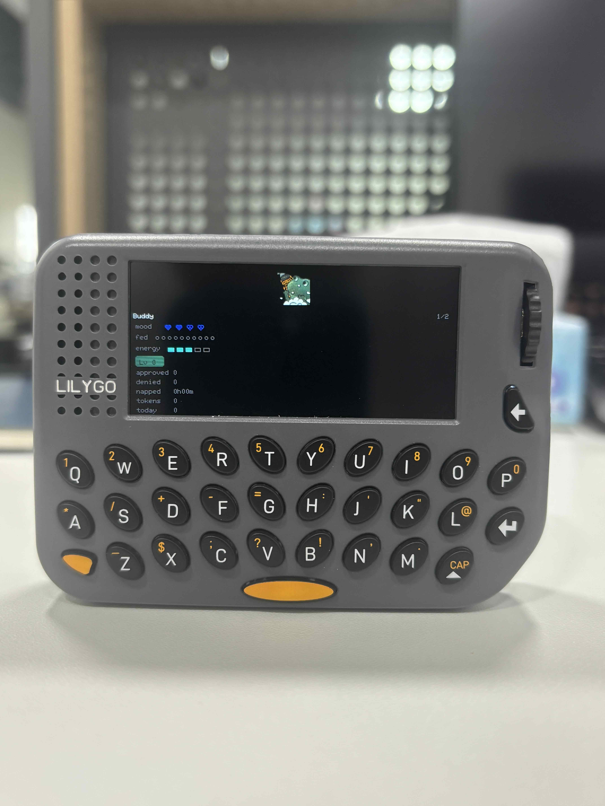
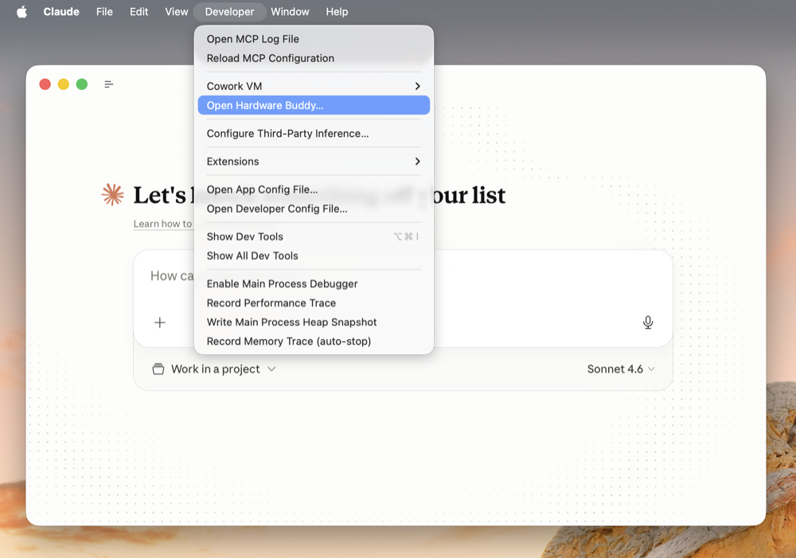

中文 简体
中文 简体claude-desktop-buddy
macOS 和 Windows 版 Claude 可通过 BLE 将 Claude Cowork 和 Claude Code 连接到创客设备，方便开发者和创客构建能显示权限提示、近期消息及其他交互信息的硬件设备。我们对 Claude 创客社区的创造力印象深刻——提供这个轻量级的可选 API，是我们让大家更方便地构建与 Claude 集成的有趣小硬件设备的方式。
想自己制作设备？ 不需要本仓库中的任何代码。请参阅 REFERENCE.md 了解通信协议：Nordic UART Service UUID、JSON 数据格式以及文件夹推送传输方式。
作为示例，我们在 ESP32 上制作了一个桌面宠物，它靠处理权限审批和与 Claude 的交互"生存"。当没有任何事情发生时它会入睡，会话开始时会醒来，有待审批的权限提示时会显得不耐烦，并让你直接在设备上批准或拒绝。

硬件
固件适配 LILYGO T-Lora pager（ESP32-S3 + LoRa），使用 LilyGoLib 库驱动显示屏、IMU 和外设。
烧录固件

配对
要将设备与 Claude 配对，首先启用开发者模式（帮助 → 故障排查 → 启用开发者模式）。然后在 开发者 → 打开 Hardware Buddy… 中打开 Hardware Buddy 窗口，点击 连接，从列表中选择你的设备。macOS 在首次连接时会提示蓝牙权限，请授予。


配对完成后，只要双方都处于唤醒状态，桥接会自动重连。
如果设备搜索不到 pager：
- 确保设备已唤醒（按任意按键）
- 检查 pager 设置菜单 → 蓝牙是否已开启
操作说明
pager 有三个控件：中键（旋转编码器按下，右上角）、旋转编码器（滚轮，右上角）和 Boot 按键（侧面）。
| 普通模式 | 宠物模式 | 信息模式 | 审批模式 | |
|---|---|---|---|---|
| 中键（单击） | 下一屏 | 下一屏 | 下一屏 | 批准 |
| 中键（双击） | 屏幕关/开 | 屏幕关/开 | 屏幕关/开 | — |
| 长按中键（约 1s） | 菜单 | 菜单 | 菜单 | 菜单 |
| 旋转编码器 | 滚动记录 | 翻页 | 翻页 | — |
| Boot（单击） | — | — | — | 拒绝 |
| Boot（约 6s） | 深度睡眠 | |||
| 摇晃 | 晕眩 | — | ||
| 面朝下放置 | 小憩（能量恢复） |
无交互 30 秒后屏幕自动关闭（有待审批提示时保持常亮）。按任意键唤醒。
ASCII 宠物
内置 18 种宠物，每种有 7 个动画（睡眠、闲置、忙碌、注意、庆祝、晕眩、爱心）。菜单 → "next pet" 可带计数循环切换，选择会保存到 NVS。
GIF 宠物
如果你想用自定义 GIF 角色代替 ASCII 宠物，将角色包文件夹拖到 Hardware Buddy 窗口的拖放目标上。应用会通过 BLE 实时推送，pager 立即切换为 GIF 模式。设置 → delete char 可恢复为 ASCII 模式。
角色包是一个包含 manifest.json 和 96px 宽 GIF 文件的文件夹：
{
"name": "bufo",
"colors": {
"body": "#6B8E23",
"bg": "#000000",
"text": "#FFFFFF",
"textDim": "#808080",
"ink": "#000000"
},
"states": {
"sleep": "sleep.gif",
"idle": ["idle_0.gif", "idle_1.gif", "idle_2.gif"],
"busy": "busy.gif",
"attention": "attention.gif",
"celebrate": "celebrate.gif",
"dizzy": "dizzy.gif",
"heart": "heart.gif"
}
}
状态值可以是单个文件名或数组。数组会轮播：每个循环结束后切换到下一个 GIF，适合用于闲置轮播，避免主屏幕反复循环同一动画。
GIF 宽度为 96px；高度不超过约 140px 可在 135×240 竖屏上完整显示。裁剪时紧贴角色边缘——透明边距会浪费屏幕空间并缩小精灵尺寸。tools/prep_character.py 可处理缩放：输入任意尺寸的 GIF，输出各状态中角色比例统一的 96px 宽 GIF 集。
整个文件夹需控制在 1.8MB 以内——gifsicle --lossy=80 -O3 --colors 64 通常可压缩 40–60%。
参考 characters/bufo/ 中的完整示例。
如果你在迭代角色并想跳过 BLE 传输，可使用 tools/flash_character.py characters/bufo 将文件暂存到 data/ 目录并直接通过 USB 执行 pio run -t uploadfs。
七种状态
| 状态 | 触发条件 | 表现 |
|---|---|---|
sleep |
桥接未连接 | 闭眼、缓慢呼吸 |
idle |
已连接，无紧急事项 | 眨眼、四处张望 |
busy |
会话正在运行中 | 冒汗、努力工作 |
attention |
有待审批的权限提示 | 警觉状态，LED 闪烁 |
celebrate |
升级（每 50K tokens） | 撒彩纸、弹跳 |
dizzy |
你摇晃了 pager | 螺旋眼、晃动 |
heart |
5 秒内审批通过 | 飘浮爱心 |
项目结构
src/
main.cpp — 主循环、状态机、UI 屏幕
buddy.cpp — ASCII 宠物种类分发 + 渲染辅助函数
buddies/ — 每个种类一个文件，各含七种动画函数
ble_bridge.cpp — Nordic UART 服务，行缓冲 TX/RX
character.cpp — GIF 解码 + 渲染
data.h — 通信协议，JSON 解析
xfer.h — 文件夹推送接收器
stats.h — NVS 持久化统计、设置、主人名、宠物种类选择
characters/ — 示例 GIF 角色包
tools/ — 生成工具和转换工具
可用性
BLE API 仅在桌面应用处于开发者模式时可用（帮助 → 故障排查 → 启用开发者模式）。它面向创客和开发者，并非官方支持的产品功能。